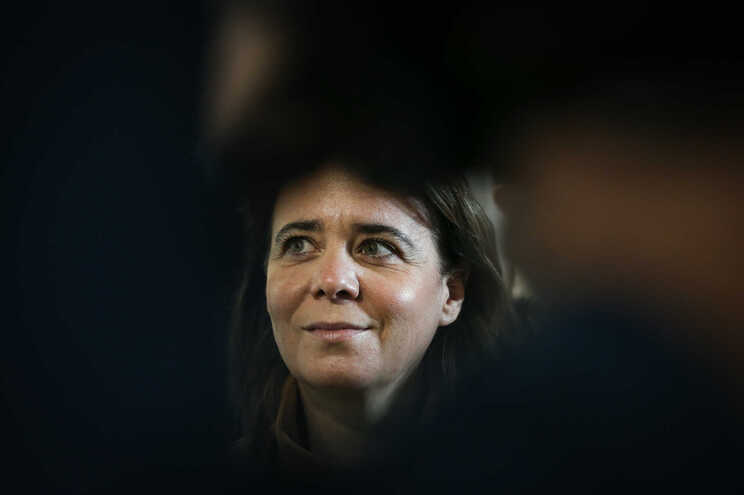

Tlm:+351 252 291 700 | E-mail: noticias@esmad.pt
Bloco "deturpa" e Iniciativa Liberal é "irresponsável"

Debate entre Catarina Martins e Cotrim de Figueiredo, esta quinta-feira à noite, saldou-se pobre em ideias, compensado por grande animosidade entre os dois extremos ideológicos.
Os líderes do Bloco de Esquerda (BE), Catarina Martins, e da Iniciativa Liberal (IL), João Cotrim de Figueiredo, não conseguiram encontrar terreno comum para debater ideias, esta quinta-feira à noite. Catarina Martins apostou tudo na falta de programa eleitoral da IL e acabou por não explicar as medidas propostas pelo Bloco. Cotrim de Figueiredo não explicou propostas como a taxa única de IRS de 15% para todos. Do debate sobraram apenas acusações mútuas: o "Bloqueio de Esquerda devia ser o nome do vosso partido" e "a Iniciativa Liberal quer pôr o Estado a pagar os negócios de toda a gente".
Os dois extremos ideológicos encontraram-se frente a frente, mas não concordaram sequer sobre o momento atual. Catarina Martins acusou a IL de "votar contra as medidas de combate à covid-19", por "considerar que os negócios não podiam parar", lembrando que a pandemia matou 19 mil pessoas em Portugal. Cotrim respondeu que, "como sempre, o BE deturpa, porque a IL votou contra a limitação de liberdades, contra os estados de emergência", inclusive porque "ainda hoje não se sabe exatamente qual foi o excesso de mortalidade por doenças não-covid devido à pandemia".
O debate sobre o SNS era obrigatório, com o BE a dizer que tem de ser reforçado "custe o que custar" e o líder da IL a defender modelos semelhantes ao holandês, de gestão privada com contratualização pública. "Quem não quer reformular este Serviço Nacional de Saúde é que contribui para a implosão e o negócio dos privados", acusou o presidente da IL.
Modelo semelhante ao que defendem para a educação, explicou Cotrim. Mas tal modelo, acusou Catarina Martins, é o que "põe o Estado de que a IL gosta pouco, a pagar os negócios privados de toda a gente".
O BE quer alterar a legislação laboral para elevar os salários médios, a IL quer acabar com o salário mínimo nacional, permitindo às regiões ou setores defini-lo. Afinal, ambos convergiram apenas para a garantia de cada qual saber o melhor para o futuro de Portugal.